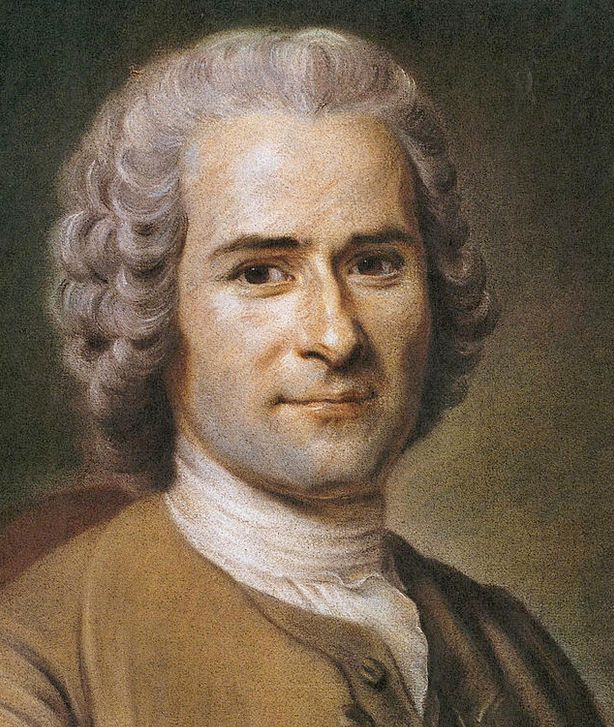

Who Was Jean-Jacques Rousseau?
Jean-Jacques Rousseau (1712–1778) was a Genevan-born philosopher, writer, political theorist, and one of the most important thinkers associated with the eighteenth-century Enlightenment. His philosophy transformed debates about freedom, political authority, inequality, education, human nature, and the relationship between the individual and society.
Rousseau is especially famous for his theory of the social contract and his concept of the general will. He asked one of the central questions of political philosophy: how can human beings remain free while living under political laws and institutions that exercise authority over them?
Rousseau also developed a powerful criticism of modern civilization. He argued that the development of society, property, competition, and social inequality had changed human life in profound ways. His philosophy therefore combines political theory with a broader investigation of human psychology, morality, history, and social development.
His major works, including Discourse on Inequality, The Social Contract, and Émile, continue to influence political philosophy, democratic theory, education, literature, and modern discussions of freedom and equality. Rousseau remains a controversial and influential thinker because his writings challenge many ordinary assumptions about civilization and progress.
Jean-Jacques Rousseau: Quick Facts
- Full name — Jean-Jacques Rousseau
- Born — 28 June 1712
- Died — 2 July 1778
- Birthplace — Geneva
- Historical period — Enlightenment
- Main fields — Political philosophy, moral philosophy, education, social theory, and philosophy of human nature
- Famous concepts — Social contract, general will, popular sovereignty, state of nature, natural freedom, civil freedom, and inequality
- Major work — The Social Contract
- Important political work — Discourse on Inequality
- Important educational work — Émile, or On Education
- Major influence — Modern political philosophy, democracy, republicanism, education, and revolutionary thought
Jean-Jacques Rousseau's Early Life and Historical Background

Jean-Jacques Rousseau was born in Geneva in 1712, a politically independent republic with a distinctive civic and religious tradition. His mother died shortly after his birth, and his childhood was marked by instability and separation from the conventional educational path followed by many members of the European intellectual elite. These early experiences contributed to the unusual course of his later life.
Rousseau spent many years moving between different places, occupations, and social environments before becoming widely known as a writer and philosopher. He received no continuous university education and formed his intellectual identity through reading, personal experience, music, writing, and encounters with influential individuals. His unconventional background distinguished him from many of his philosophical contemporaries.
Rousseau's personal experiences contributed to his sensitivity toward questions of dependence, social status, inequality, and exclusion. Unlike philosophers who developed their ideas primarily within universities, Rousseau remained deeply concerned with the distance between philosophical ideals and the realities of ordinary social life, including the pressures created by wealth, status, and public opinion.
He eventually became connected with the intellectual culture of eighteenth-century France and participated in debates that defined the Enlightenment. Yet Rousseau also became one of the Enlightenment's most important critics, questioning whether the growth of the arts and sciences necessarily made human beings morally better or politically freer.
This historical background is essential for understanding Rousseau's philosophy. His writings repeatedly return to the relationship between the natural individual and the social world, asking how dependence, inequality, competition, and political institutions transform human life. These questions eventually became central to his theories of civilization, education, freedom, and legitimate political authority.
Jean-Jacques Rousseau and the Enlightenment
Rousseau is generally considered one of the major thinkers of the Enlightenment, but his relationship with the Enlightenment was complex and sometimes deeply critical. Many Enlightenment philosophers celebrated rational inquiry, scientific progress, education, and the expansion of knowledge as forces capable of improving human life and overcoming superstition, ignorance, and political oppression.
Rousseau questioned whether this optimistic understanding of progress was always justified. He asked whether advances in the arts and sciences had actually produced greater virtue, freedom, and happiness. In his early writings, he argued that increasingly sophisticated societies could also encourage vanity, dependence, inequality, and a destructive concern with social appearance and public recognition.
His criticism did not mean that Rousseau simply rejected reason, learning, or political reform. Instead, he examined the social and moral conditions under which human beings could genuinely become freer and better. He was especially concerned that civilization might develop impressive institutions and forms of knowledge while leaving individuals increasingly dependent upon the opinions and power of other people.
Rousseau therefore occupies a distinctive position within Enlightenment philosophy. He participated in the intellectual culture of his age while also challenging its confidence in automatic progress. His philosophy forced later thinkers to distinguish technological and intellectual advancement from moral and political improvement, asking whether a more advanced civilization necessarily creates better human beings or more just forms of social life.
What Was Rousseau's View of Human Nature?
A central question in Rousseau's philosophy concerns the nature of human beings before the development of complex social institutions. Rousseau used the idea of the state of nature to investigate which characteristics belong fundamentally to human beings and which arise historically through the development of property, social comparison, political authority, and organized civilization.
Rousseau did not describe the state of nature as a straightforward historical period that could simply be reconstructed from archaeological or documentary evidence. Instead, it served as a philosophical and conjectural tool for examining the difference between basic human capacities and the characteristics produced by particular forms of society. This allowed him to question the assumption that modern social behavior reveals an unchanging human nature.
In Rousseau's account, early human beings possessed basic instincts, physical needs, and a natural concern for self-preservation. They were also capable of pity or compassion, which Rousseau regarded as an important natural limitation on unnecessary cruelty. Before highly developed social comparison emerged, individuals were not necessarily driven by the constant ambition to dominate or surpass other human beings.
Human beings also possess the capacity for development and change. Rousseau called this distinctive human capacity perfectibility. Unlike other animals, human beings can transform their habits, desires, knowledge, institutions, and ways of life over time. Perfectibility makes historical progress possible, but it also makes possible new forms of corruption, dependence, and inequality.
Rousseau's State of Nature
Rousseau's state of nature is one of the most famous concepts in the history of political philosophy. Earlier philosophers such as Thomas Hobbes and John Locke had also used the state of nature to explain political authority, natural rights, and the origins of society. Rousseau entered this tradition but developed a significantly different account of early human existence and social development.
Rousseau's account differs sharply from Hobbes's famous picture of a natural condition dominated by insecurity and conflict. Rousseau did not believe that early human beings were naturally engaged in a continuous war against one another. Because their needs were relatively limited and encounters were less socially organized, permanent competition and political domination had not yet become central.
Instead, Rousseau imagined early humans as relatively independent beings with simple needs and considerable physical freedom. They did not yet live within highly developed systems of property, social status, economic competition, and political authority. Consequently, they were less dependent upon the opinions, approval, wealth, and power of other people than individuals living in civilized societies.
The transition from this relatively simple condition to organized society created new possibilities for cooperation, language, development, and collective achievement. Yet it also introduced new forms of dependence, comparison, inequality, and domination. This transformation became central to Rousseau's analysis of civilization, because he sought to explain how human beings became socially unequal without assuming that such inequality was simply natural or inevitable.
Rousseau's Ideas of Amour de Soi and Amour-Propre
Rousseau made an important distinction between two forms of self-regard: amour de soi and amour-propre. This distinction is essential for understanding his philosophy of human psychology, social development, and inequality. Rousseau used these concepts to explain how a basic concern for self-preservation can gradually become transformed by social comparison and the desire for recognition.
Amour de soi refers to a basic concern for one's own preservation, security, and well-being. In Rousseau's account, this form of self-love belongs to human beings in a relatively natural condition and does not necessarily require hostility toward other people. It can coexist with pity or compassion because protecting oneself does not automatically require dominating or humiliating others.
Amour-propre, by contrast, develops within social relationships and depends heavily upon comparison with others. People begin to care intensely about reputation, recognition, status, superiority, and the judgments made by society. Their sense of value increasingly depends upon how they appear in the eyes of other people, rather than simply upon their own independent existence and needs.
Rousseau believed that amour-propre could become a major source of competition, vanity, jealousy, resentment, and inequality. At the same time, the desire for recognition became deeply connected with the development of culture and social life. His analysis therefore does not describe human psychology as fixed, but shows how social institutions can shape human desires and transform the way individuals understand themselves and their relationships with others.
Rousseau's Philosophy of Inequality
The problem of inequality occupies a central position in Rousseau's political and social philosophy. His Discourse on the Origin and Foundations of Inequality Among Men investigates how human societies developed forms of hierarchy that do not simply arise from natural differences between individuals. Rousseau was especially concerned with explaining inequality as a historical and social development rather than treating it as part of an eternal order.
Rousseau distinguished between natural differences and moral or political inequality. Natural differences include variations in age, health, physical strength, and other characteristics that exist among individuals. Political inequality, however, concerns differences in wealth, power, privilege, authority, and social status that are established and maintained through human institutions, laws, customs, and systems of dependence.
For Rousseau, the development of private property played a major role in transforming human relationships. Once people began claiming exclusive control over land and resources, questions of possession, wealth, protection, and social power became increasingly important. Property encouraged new forms of competition and dependence, making it possible for some individuals to accumulate advantages while others became increasingly vulnerable to economic and political inequality.
His analysis of inequality is therefore not simply an argument against all forms of society or every form of social difference. Rousseau attempts to explain how historical institutions can create relationships in which some individuals become dependent upon the wealth and power of others. His critique later influenced debates about democracy, republicanism, socialism, economic inequality, and the social conditions necessary for meaningful political freedom.
Rousseau's lasting importance lies partly in his insistence that inequality must be understood historically. Social arrangements that appear natural may actually be the result of particular developments, institutions, and distributions of power. By asking how unequal societies came into existence, Rousseau encouraged later political thinkers to investigate not only whether inequality is just, but also how systems of privilege become established and preserved over time.
Rousseau's Criticism of Civilization and Progress
Rousseau is famous for questioning whether the development of civilization necessarily improves human beings. This question became especially important in his early writings on the arts, sciences, and the moral effects of social progress. While many thinkers celebrated civilization as a movement away from ignorance and barbarism, Rousseau asked whether intellectual achievement necessarily produced moral virtue, independence, and genuine happiness.
Rousseau argued that sophisticated societies can produce remarkable achievements while also encouraging vanity and dependence. Individuals may become increasingly concerned with appearances, reputation, and social approval rather than genuine virtue and independence. Social life can therefore encourage people to perform identities for others, making personal value increasingly dependent upon public recognition and comparison rather than authentic self-direction.
His criticism was directed against the assumption that technological, scientific, or cultural advancement automatically produces moral advancement. A society may become wealthier and more intellectually sophisticated while still containing serious forms of domination and inequality. Progress in knowledge can increase human power without necessarily determining how that power will be used or whether social relationships will become more just and humane.
Rousseau's criticism of civilization should not be understood as a simple demand to abandon society and return literally to a primitive existence. His philosophical purpose was to expose the contradictions of modern social life and to ask how freedom might be preserved under conditions of increasing dependence. Civilization creates capacities for cooperation and development, but it can also produce institutions that distort human desires and reinforce unequal relationships.
His criticism of progress remains influential because it raises a question that continues to matter in modern societies: can material, technological, and intellectual development improve human life without also creating new forms of dependence and inequality? Rousseau's philosophy encourages us to judge progress not only by what humanity can achieve, but also by whether individuals become freer, more equal, and less subject to arbitrary forms of social domination.
What Is Rousseau's General Will?
The general will is one of Jean-Jacques Rousseau's most famous and controversial philosophical concepts. It refers to the political will directed toward the common good of the political community rather than merely toward the private interests of particular individuals or groups. The concept stands at the center of Rousseau's attempt to explain how collective political authority can remain compatible with individual freedom.
Rousseau distinguished the general will from the simple will of all. The will of all can be understood as the collection or combination of individual preferences, each potentially influenced by private interests. The general will, by contrast, concerns what citizens can will when considering their shared political interest and the conditions under which all members of the community can live under laws of equal application.
For Rousseau, legitimate laws must possess a general character. They should apply to citizens as members of the political community rather than serving the private interests of particular individuals, factions, or privileged groups. This requirement is closely connected with his concern for political equality, because a community cannot be genuinely self-governing when its laws function primarily as instruments of domination for one section of society.
The general will is central to Rousseau's theory of political legitimacy because he believed that freedom could be preserved when citizens obey laws arising from their own collective sovereignty. Citizens are not ideally obeying the personal command of a ruler but participating in a system of public law that they help constitute as members of the sovereign people. This is Rousseau's attempt to reconcile political obligation with collective self-government.
The concept has remained controversial because philosophers disagree about how the general will can be identified in real political societies. It has inspired democratic and republican theories but has also raised concerns about majority power, political conformity, and coercion. Critics have warned that appeals to the common good can be misused when political authorities claim to know the people's true interests better than citizens themselves.
General Will vs Will of All
Understanding the difference between the general will and the will of all is essential for understanding Rousseau's political philosophy. The two concepts may appear similar because both concern collective decisions, but they represent fundamentally different ways of thinking about political judgment. Rousseau introduced this distinction to show why a numerical majority of private preferences is not automatically identical with the common good.
The will of all refers broadly to the collection of private preferences held by individual members of society. Each person may support a policy because of personal wealth, occupation, family position, social status, or membership in a particular group. When these separate interests are simply added together, the resulting decision may still reflect competition among private or sectional interests rather than a genuine concern for the political community.
The general will, by contrast, concerns the common political good. Rousseau believed that citizens must think of themselves not only as private individuals pursuing personal interests but also as members of a political community responsible for laws that apply to everyone. The question is therefore not merely what each person wants privately, but what laws can reasonably serve the common conditions of freedom and political equality.
This distinction explains why Rousseau was concerned about factions and extreme inequality. When powerful groups dominate political decision-making, private or sectional interests may replace genuine concern for the common good. Economic and social inequality can make political judgment increasingly dependent upon competing interests, preventing citizens from occupying a sufficiently common standpoint when considering laws intended to govern the entire community.
Rousseau's distinction remains important for modern political theory. Democratic politics must constantly confront the difference between counting individual preferences and identifying broader public interests. The concept of the general will does not provide an easy formula for solving this problem, but it forces political philosophy to ask whether legitimate democratic decisions require more than simple aggregation and instead depend upon equality, public reasoning, and concern for the common good.
Rousseau's Philosophy of Freedom
Freedom is one of the most important themes in all of Rousseau's philosophy. His political theory attempts to explain how individuals can remain free while living under laws and political institutions. Rousseau did not understand liberty simply as the absence of every restriction. Instead, he investigated the conditions under which individuals can avoid arbitrary dependence upon the personal will and power of other human beings.
Rousseau distinguishes between different forms of freedom. In the state of nature, human beings possess a form of natural freedom, limited primarily by their physical abilities, circumstances, and the requirements of survival. This freedom involves independence from political authority, but it also exists within a condition where human capacities and social possibilities remain relatively undeveloped.
Political society changes this condition. Individuals may lose some forms of unrestricted natural independence, but they can gain civil freedom when they live under laws that protect them from arbitrary domination by particular individuals. Civil freedom depends upon a legitimate political order in which law replaces personal rule and citizens possess equal standing within the community.
Rousseau also describes moral freedom as an important form of human liberty. Moral freedom involves acting according to laws or principles that one can recognize as one's own rather than simply following immediate impulses and desires. In this sense, freedom requires self-direction and the capacity to govern one's actions, rather than being controlled entirely by changing passions or external pressures.
Rousseau's central political challenge is therefore not simply to eliminate all restrictions from human life. He asks how political restrictions can become legitimate when they arise from collective self-government rather than domination by an external ruler. His philosophy connects freedom with political equality, moral autonomy, and protection from personal dependence, making liberty a far more complex concept than mere independence from every social obligation.
What Did Rousseau Mean by "Forced to Be Free"?
One of the most controversial ideas associated with Rousseau is the phrase often translated as "forced to be free." The statement appears paradoxical because freedom is usually understood as the absence of coercion. Rousseau's argument, however, appears within his theory of the social contract and concerns the obligations of citizens who have become members of a legitimate political community.
Rousseau's argument is connected with his theory of the social contract and the general will. A citizen who participates in forming a legitimate political community is not supposed to be obeying the arbitrary will of another individual. The political association is instead understood as one in which citizens collectively establish the general laws governing all members and thereby share in the sovereignty of the community.
From this perspective, Rousseau argues that citizens are subject to laws expressing their collective political sovereignty. Obeying legitimate law can therefore represent a form of freedom because citizens obey laws that they have collectively authorized as members of the sovereign people. The underlying aim is to protect individuals from personal dependence by replacing arbitrary commands with general laws that apply equally throughout the political community.
The phrase becomes especially difficult when an individual citizen disagrees with a collective decision. Rousseau's argument suggests that a person may be mistaken about what the general will requires and may therefore remain bound by a legitimate law despite personal opposition. This raises serious philosophical questions about whether collective political decisions can truly remain expressions of freedom for those citizens who find themselves consistently on the losing side.
Critics have therefore argued that this idea creates significant dangers. If political authorities claim to know the general will better than individual citizens themselves, the concept could potentially be used to justify coercion and suppress disagreement. The controversy remains one of the most debated aspects of Rousseau's political philosophy and illustrates the continuing difficulty of reconciling individual liberty with collective political authority.
Rousseau and Popular Sovereignty
Popular sovereignty is another central idea in Rousseau's political theory. Rousseau rejected the idea that political legitimacy could simply rest upon inherited royal power, divine right, or the permanent authority of a small privileged class. Legitimate political authority must instead originate from the people considered collectively as citizens capable of participating in the formation of the laws governing their common political life.
Sovereignty belongs to the people considered collectively. Citizens form the political sovereign and possess the authority to establish the general laws governing their community. Rousseau's theory therefore distinguishes the source of legitimate law from the officials who administer political institutions. The people retain the fundamental status of sovereign even when particular governmental bodies perform practical administrative and executive functions.
Rousseau's concept of sovereignty is closely connected with his criticism of political dependence. A free political community should not simply transfer its fundamental authority permanently to another individual and then become dependent upon that person's will. Political freedom requires citizens to remain, at least in principle, the authors of the general laws to which they are subject as equal members of the political community.
His theory became an important source for later democratic and republican traditions because it emphasized the political equality of citizens. At the same time, modern political systems differ substantially from the smaller political communities Rousseau often had in mind. Large populations, complex economies, and representative institutions create practical problems that make direct participation by every citizen much more difficult than in Rousseau's preferred political models.
Rousseau's theory of popular sovereignty continues to influence debates about democracy, representation, participation, and political legitimacy. His central question remains important: who ultimately possesses the authority to make laws within a political community? Rousseau's answer places sovereignty in the people themselves and challenges political systems in which citizens become permanently separated from meaningful participation in collective self-government.
What Did Rousseau Believe About Democracy?
Rousseau is frequently associated with the history of democracy because of his emphasis on popular sovereignty and citizen participation. However, his political theory does not correspond exactly to modern representative democracies. Rousseau was particularly concerned that citizens might surrender their sovereign authority entirely to representatives and gradually become politically passive subjects rather than active members of a self- governing political community.
Rousseau was skeptical about the idea that citizens could permanently transfer their sovereignty to elected representatives and still remain fully sovereign. He distinguished between the people who possess sovereign authority and the government that performs administrative functions. For Rousseau, these two should not be confused: government is an instrument responsible for carrying out political decisions, whereas sovereignty belongs fundamentally to the citizen body.
In his political philosophy, the sovereign people create general laws, while government carries out and administers those laws. This distinction allowed Rousseau to argue that government officials are not identical with the sovereign political community itself. A government can therefore become corrupt or act against the public interest, whereas the concept of sovereignty concerns the fundamental authority of citizens collectively to determine their political order.
Rousseau also recognized that political forms must be considered in relation to the size and circumstances of particular communities. His ideal of active citizen participation is easier to imagine in smaller political communities than in enormous modern states. This limitation has made his political theory both influential and controversial, since later democratic thinkers have had to adapt his emphasis on participation to societies far larger and more socially complex than his own examples.
Rousseau's ideas continue to influence debates about direct democracy, participatory democracy, deliberative democracy, representation, and citizen engagement. His philosophy asks whether voting alone is enough for political freedom or whether citizens must possess deeper forms of participation in public life. By distinguishing sovereignty from government, Rousseau provided a powerful framework for examining the relationship between the people and the institutions that govern them.
Rousseau's Philosophy of Equality
Equality was essential to Rousseau's understanding of political freedom. He believed that extreme economic and social inequality could undermine the ability of citizens to participate as genuinely independent members of a political community. Political freedom cannot be understood only in formal legal terms when large differences in wealth and power allow some individuals to exercise overwhelming influence over the lives and choices of others.
When some individuals possess enormous wealth and power while others are deeply dependent upon them, formal political rights may not be enough to guarantee genuine freedom. Economic dependence can create relationships of domination even when they do not take the form of direct slavery. Rousseau was therefore concerned with the social conditions that allow citizens to stand in political relationships without being forced into submission by poverty or private power.
Rousseau did not simply argue that every person must possess exactly the same amount of wealth or identical social circumstances. His concern was more fundamentally about preventing conditions in which some citizens become powerful enough to dominate others while others become dependent enough to lose meaningful independence. A legitimate political community requires sufficient equality to prevent wealth from becoming a permanent source of political subordination.
This connection between political freedom and relative social equality remains one of Rousseau's most important contributions to modern political philosophy. He challenged the assumption that liberty can be protected merely by removing legal restrictions. Individuals may be formally free while remaining practically dependent upon employers, wealthy patrons, powerful institutions, or social groups capable of determining the conditions under which they can survive and participate.
Rousseau's arguments continue to influence modern debates about economic inequality and democratic citizenship. His philosophy suggests that political institutions must consider not only whether citizens possess equal rights in principle, but also whether social conditions allow them to exercise those rights with genuine independence. The relationship between material inequality and political power remains one of the central questions inherited from Rousseau's thought.
Rousseau and Private Property
Rousseau's discussion of private property is central to his explanation of the historical development of inequality. He argued that the establishment of exclusive claims over land and resources transformed relationships between human beings. Property created new distinctions between those who possessed valuable resources and those who depended upon access to resources controlled by others, thereby altering both economic and political relationships.
Property made it possible for some individuals to accumulate wealth while others became dependent upon resources controlled by more powerful members of society. This development contributed to the emergence of social hierarchy, competition, and political institutions. Rousseau's historical analysis emphasizes that inequalities of wealth can gradually become connected with inequalities of authority, allowing economic advantages to influence the structure of political life.
Rousseau did not simply argue that all property must disappear. In The Social Contract, property exists within civil society and is regulated by political law. His deeper concern was the relationship between property, inequality, dependence, and political power. The question was not merely whether people could possess things, but whether particular distributions of property could undermine the freedom and equality required for legitimate political association.
His analysis later influenced socialist, republican, and democratic critiques of economic inequality, although Rousseau's political philosophy cannot simply be reduced to later socialist theories. He was writing before the development of modern industrial capitalism and did not construct a complete economic theory comparable to those of later political economists. Nevertheless, his analysis raised enduring questions about wealth, dependence, and the social foundations of power.
Rousseau's treatment of property remains philosophically important because it connects economic arrangements with political freedom. Property is not presented as merely a private matter when unequal ownership can shape relationships of dependence throughout society. His work therefore encourages political philosophy to examine how systems of ownership influence citizenship, equality, and the practical ability of individuals to live without subordination to private power.
Rousseau's Émile, or On Education
Émile, or On Education is one of Rousseau's most important and influential works. The book follows the imagined education of a young boy named Émile and uses this narrative structure to develop Rousseau's broader philosophy of human development. Published in 1762, the work combines educational theory, moral philosophy, psychology, religion, and political reflection within a single philosophical project.
Rousseau argues that education should allow the child to develop gradually rather than imposing adult expectations too early. Different stages of life require different forms of learning and different relationships with authority. The child should first develop physical abilities, perception, and practical understanding before being overwhelmed with abstract instruction. Education must therefore take account of the changing capacities of the developing human being.
The work also connects education with morality and political life. Rousseau believed that the formation of independent judgment was necessary if individuals were to become capable of living freely and responsibly within society. A person who merely obeys the opinions of others has not developed genuine autonomy. Education should therefore prepare individuals to judge, choose, and act without becoming entirely dependent upon social approval or external authority.
Émile also contains the famous Profession of Faith of the Savoyard Vicar, which addresses questions concerning conscience, religion, and the knowledge of God. The inclusion of these ideas contributed to the controversy surrounding the work. The book was condemned and banned in several places, demonstrating how closely Rousseau's educational philosophy was connected with broader religious and political disputes of his age.
The work also contains Rousseau's controversial views about gender and the education of women, especially in the section devoted to Sophie. These views have been strongly criticized by later feminist philosophers because they assign sharply different social roles to men and women. Émile therefore remains both historically influential and philosophically contested, illustrating the tension between Rousseau's powerful defense of freedom and the limitations present within some of his own social and educational assumptions.
Rousseau's Philosophy of Religion
Religion was an important and controversial subject in Rousseau's thought. His writings investigate the relationship between personal belief, conscience, morality, political authority, and the unity of the political community. Rousseau did not simply defend traditional religious institutions without criticism, nor did he reduce religion to superstition. Instead, he explored the moral and political roles that religious belief could play within human life.
In Émile, Rousseau presents the famous Profession of Faith of the Savoyard Vicar, which develops a form of religious belief based partly on conscience, personal reflection, and the observation of nature. Rousseau emphasizes the importance of inner conviction rather than unquestioning obedience to religious authority. These arguments contributed significantly to the controversy surrounding Émile and its condemnation.
Rousseau was critical of religious intolerance and of institutions that used theological authority to dominate political life. He believed that political authority should not possess unlimited power over the private beliefs of individuals. At the same time, Rousseau was concerned with the moral foundations of political communities and believed that shared commitments could play an important role in sustaining civic trust and social cooperation.
His discussion of civil religion in The Social Contract remains particularly controversial. Rousseau asks whether a political community requires certain shared public beliefs or moral commitments in order to survive. Civil religion is therefore concerned less with controlling every theological doctrine than with the relationship between religious belief, civic loyalty, and the moral bonds necessary for collective political life.
Rousseau's philosophy of religion continues to raise difficult questions about religious freedom and political unity. Can a political community encourage common civic values without imposing unacceptable control over personal belief? How far should religious institutions influence public authority? Rousseau did not provide answers that modern political philosophy universally accepts, but his analysis remains important for understanding the continuing tension between conscience, religion, toleration, and citizenship.
Rousseau's Moral Philosophy
Rousseau's moral philosophy is closely connected with freedom, conscience, compassion, and human development. He rejected the idea that morality could be understood only as obedience to external social conventions. Social customs may shape behavior, but Rousseau was interested in deeper questions about the human capacity for moral judgment and the conditions under which individuals can develop an independent and responsible relationship with themselves and others.
Human beings possess the capacity to act according to principles rather than merely following immediate desires. This capacity for moral self-direction becomes increasingly important as individuals develop within social relationships. Rousseau's account of freedom therefore has a moral dimension: a person is not fully free simply because every desire can be satisfied, but because the individual can reflect upon desires and act according to principles that can be recognized as one's own.
Rousseau also gave an important role to pity or compassion. He believed that human beings possess a natural capacity to respond to the suffering of others, and this capacity helps limit purely selfish behavior. Compassion is especially important in his account of human nature because it challenges the assumption that individuals are naturally driven only by competition and self-interest. Moral life develops from capacities that cannot be reduced entirely to rational calculation.
Rousseau's moral psychology also examines the dangers created by social comparison and amour-propre. When individuals become dependent upon recognition and approval, they may sacrifice authenticity and independence in pursuit of status. Moral development therefore requires more than following social expectations; it involves developing forms of self-respect and relationships with others that are not based entirely upon domination, humiliation, competition, or vanity.
His moral philosophy influenced later thinkers, especially Immanuel Kant, who admired Rousseau and developed a different but related emphasis on freedom, autonomy, and moral law. Rousseau's lasting importance lies in his attempt to connect morality with human freedom and independence. He asked how individuals can remain true to themselves while living among others, making his philosophy central to later debates about autonomy, authenticity, conscience, and moral responsibility.
What Makes Political Authority Legitimate According to Rousseau?
Rousseau believed that political power cannot become legitimate simply because one person or group is strong enough to force others to obey. Physical power may produce obedience, but obedience produced by fear or necessity is not the same as a moral obligation to obey. A conqueror may control a population through force, yet force alone cannot explain why that population ought to recognize the conqueror's authority as politically rightful or morally legitimate.
Legitimate political authority must therefore be connected with an agreement through which individuals become members of a political community. For Rousseau, this association must create a public order in which no citizen is placed permanently under the arbitrary personal will of another. Political authority becomes a question not merely of who governs, but of whether the laws themselves can be justified to those who are required to live under them.
Rousseau's solution involves collective sovereignty. Citizens, considered together as a political body, participate in establishing the general laws under which they live. The sovereign is therefore not simply a king, minister, or governing class standing above society. In principle, the people themselves possess sovereign authority, while the government performs the distinct task of administering public affairs and carrying out the laws established by the political body.
This distinction between sovereignty and government is essential to Rousseau's theory. A government may exercise executive power, but it does not thereby become the ultimate source of political legitimacy. Rousseau feared that rulers and magistrates could gradually substitute their own corporate interests for the interests of the citizens. A legitimate political order must therefore preserve the sovereignty of the people rather than allowing government to become an independent master over the community.
The legitimacy of political authority therefore depends upon the relationship between law, freedom, equality, and the common good. Rousseau's theory attempts to show that political obligation need not mean simple submission to another person's will. When citizens are genuinely connected to the making of general laws, political authority can, at least in principle, become compatible with collective self-government. This problem made Rousseau a foundational thinker in modern theories of political legitimacy and democratic sovereignty.
Major Works of Jean-Jacques Rousseau
Rousseau wrote philosophical, political, educational, autobiographical, literary, and musical works throughout his life. His writings often combine philosophical argument with historical speculation, personal reflection, imaginative narrative, and literary experimentation. Rather than separating philosophy completely from literature, Rousseau frequently used different literary forms to explore questions about freedom, human development, morality, society, emotion, and the conflicts produced by modern civilization.
His early philosophical writings brought him prominence by challenging the confident belief that intellectual and cultural progress necessarily improves human beings. Later works developed increasingly systematic reflections on inequality, political legitimacy, education, religion, and moral freedom. Rousseau's major texts should therefore be read as interconnected parts of a broader investigation into how human beings are transformed by social institutions and how freedom might be preserved within an increasingly complex society.
Several of Rousseau's most important works were published during the intellectually productive years surrounding the middle of the eighteenth century. The Social Contract and Émile, both published in 1762, became especially controversial and influential. His political and educational writings provoked strong reactions because they challenged established assumptions about sovereignty, religion, childhood, authority, and the relationship between the individual and society.
Rousseau's literary and autobiographical works are also important for understanding his intellectual legacy. His novel Julie, or the New Heloise became enormously influential, while his autobiographical writings explored personal identity, memory, sincerity, alienation, and self-understanding. The variety of his work makes Rousseau difficult to classify simply as a political philosopher, since his reflections extend across moral psychology, literature, education, music, religion, and the philosophical study of human experience.
- Discourse on the Sciences and Arts — A work questioning whether the progress of the arts and sciences necessarily improves human morality.
- Discourse on the Origin and Foundations of Inequality Among Men — Rousseau's major investigation of the development of social and political inequality.
- The Social Contract — His most famous work of political philosophy, examining political legitimacy, freedom, sovereignty, and the general will.
- Émile, or On Education — A major work on education, human development, morality, and freedom.
- Julie, or the New Heloise — An influential novel exploring love, morality, social life, and emotional experience.
- Confessions — Rousseau's influential autobiographical work examining his own life, personality, experiences, and intellectual development.
- Reveries of the Solitary Walker — A late work combining autobiography, philosophical reflection, nature, and personal introspection.
Rousseau's Discourse on Inequality
Discourse on the Origin and Foundations of Inequality Among Men is one of Rousseau's most influential philosophical works. Published in 1755, it investigates how human beings who might originally have lived with relatively limited needs and independence could gradually become members of highly unequal and politically organized societies. Rousseau's purpose is not simply to describe a documented historical sequence, but to use a philosophical reconstruction to examine the social origins of dependence, hierarchy, and domination.
Rousseau traces a conceptual movement from relatively simple forms of human existence toward increasing cooperation, family life, property, social comparison, economic dependence, and political institutions. As human beings begin living more closely together, they develop new needs and become increasingly aware of how they are viewed by others. The desire for recognition and superiority can then transform social relationships, making comparison, competition, and status increasingly important features of collective life.
A major theme of the work is that many forms of inequality are not simply natural differences between individuals. Rousseau distinguishes natural inequalities, such as differences in age or physical strength, from moral or political inequalities involving wealth, privilege, authority, and social status. These latter forms are created and reinforced through institutions and relationships involving property, economic dependence, and political power rather than arising directly from unchanging features of human nature.
Private property occupies a particularly important place in Rousseau's analysis. The establishment of exclusive claims over land and resources creates new possibilities for accumulation and dependence, eventually contributing to conflicts between those who possess wealth and those who lack it. Rousseau's argument is not merely that property suddenly explains every political institution, but that changing material and social relationships can alter how individuals depend upon one another and create conditions in which inequality becomes politically entrenched.
The Discourse on Inequality became a foundational work for later social and political criticism because it encouraged philosophers to examine the historical origins of institutions that often appear natural or inevitable. Rousseau's central question remains influential: how far are human character and social inequality products of the institutions people have created? By treating dependence and hierarchy as historically developed rather than simply natural, the work opened new possibilities for criticizing existing forms of social and political organization.
Rousseau's The Social Contract Explained
The Social Contract, published in 1762, is Rousseau's most famous work of political philosophy. Its central concern is the relationship between individual freedom and political authority. The problem Rousseau attempts to solve is how people can enter a political association and accept binding laws without becoming the property or servants of another individual. His answer seeks to reconcile social cooperation with a form of collective self-government.
Rousseau rejects the idea that legitimate political authority can be based solely on force. He also rejects the idea that human beings can permanently surrender their fundamental freedom to another individual and still remain genuinely free. A political community cannot be legitimate merely because its rulers are powerful or because its citizens have become accustomed to obedience. The question of legitimacy requires an account of how citizens themselves become connected to the authority of the laws governing them.
The solution he develops is based on collective political sovereignty. Through the social contract, individuals become members of a political body and acquire a new civic relationship with one another. Citizens are not supposed to submit themselves to a private master; instead, they participate in an association directed toward the common good. The political community, considered as sovereign, becomes the source of general law, while government is assigned the administrative task of carrying those laws into practical effect.
The laws of a legitimate political community should express the general will rather than the private interests of rulers or privileged factions. Rousseau therefore distinguishes the common political interest from the mere collection of individual preferences. Citizens must consider themselves not only as private persons pursuing personal advantage, but also as members of a community whose laws apply to all. This demanding conception of citizenship lies at the center of his attempt to reconcile authority with freedom.
The Social Contract remains controversial because the conditions required for genuine collective self-government are difficult to achieve in large and unequal societies. Rousseau's skepticism about representation, his distinction between sovereign and government, and his theory of the general will continue to generate major philosophical debates. Nevertheless, the work remains a central text in political philosophy because it asks whether political freedom can mean more than the absence of restraint and whether citizens can genuinely regard themselves as authors of the laws they obey.
Rousseau and Thomas Hobbes: State of Nature Compared
Rousseau and Thomas Hobbes both used the concept of the state of nature, but they developed very different pictures of human life before organized political society. For both philosophers, the state of nature served as a way of investigating the foundations of political authority and the characteristics of human beings outside established institutions. Their contrasting accounts, however, produced fundamentally different explanations of why social life becomes necessary and what dangers political institutions must address.
Hobbes famously described a natural condition in which insecurity, competition, and conflict create a powerful need for political authority capable of maintaining peace. Rousseau, however, believed that early human beings were not necessarily engaged in continuous war with one another. In his account, people in a relatively undeveloped condition possessed limited needs and were often sufficiently independent to avoid the permanent competition and mutual dependence characteristic of more complex social life.
Rousseau also challenged the assumption that the ambitious and competitive individual described by Hobbes represents unchanging human nature. Many forms of rivalry, vanity, and social competition, Rousseau argued, developed only after human beings became increasingly dependent upon one another and began comparing their status. The growth of property, social recognition, and economic interdependence helped create motivations that could not simply be projected backward into the earliest condition of human existence.
Their disagreement therefore reflects two fundamentally different approaches to political philosophy. Hobbes emphasizes the insecurity of the natural condition and the need for authority to escape violent conflict. Rousseau, by contrast, investigates how society itself can create new forms of dependence, inequality, and domination. Political institutions are consequently not only remedies for human problems; they can also become part of the historical process through which new forms of injustice and unfreedom are created.
Despite their differences, both philosophers profoundly influenced the later tradition of social contract theory. Their comparison raises a continuing philosophical question about the origins of political authority: are human beings primarily protected from one another by society, or are they also transformed and sometimes corrupted by the social institutions they create? Rousseau's answer places far greater emphasis on the historical development of dependence and inequality, making his critique of civilization sharply different from Hobbes's.
Rousseau and John Locke: Political Philosophy Compared
Rousseau and John Locke are both important philosophers of freedom and political legitimacy, but they developed different theories about property, natural rights, political authority, and the relationship between individuals and society. Both belong to the broader tradition of social contract thought, which asks how political authority can be justified through the position or agreement of those who become subject to it. Their answers, however, lead toward very different conceptions of liberty and political community.
Locke gave strong philosophical importance to natural rights and private property. His political theory treats government as limited by the purposes for which political authority is established and gives major importance to protecting individual rights. Rousseau, by contrast, was deeply concerned with the historical role of property in producing social inequality and dependence. He therefore examined not only whether property could be protected legitimately, but also how unequal control over resources could alter political relationships.
Both philosophers believed that legitimate government requires some form of connection with the consent of the governed. However, Rousseau's emphasis on collective sovereignty and the general will differs significantly from Locke's theory of limited government and individual rights. Rousseau was particularly concerned that citizens should not permanently alienate their sovereign capacity for self-government, whereas Locke's theory became more closely associated with constitutional limitation and the protection of individual rights.
Their differences also concern the meaning of political freedom. Locke's political philosophy is strongly associated with protection against arbitrary government and interference with individual rights. Rousseau agrees that arbitrary domination threatens freedom, but he places additional emphasis on whether citizens participate as political equals in a community directed toward the common good. For Rousseau, severe economic and social inequality can also undermine freedom by creating relationships of personal dependence.
The comparison between Rousseau and Locke remains important because their different theories continue to shape modern debates between liberal individualism, democratic participation, equality, property, and the common good. Neither philosopher can be reduced to a simple modern political label, yet their contrasting priorities reveal a lasting tension within modern political thought. Political societies must continually balance the protection of individual independence with the need for collective institutions capable of serving citizens as members of a shared political community.
Rousseau and Voltaire: Two Different Enlightenment Philosophers
Rousseau and Voltaire were both major figures associated with the eighteenth-century French Enlightenment, but they represented significantly different intellectual temperaments and philosophical priorities. Their lives and writings reveal that the Enlightenment was never a single unified doctrine shared equally by all its major thinkers. Although both criticized important forms of intolerance and inherited authority, they differed sharply in their attitudes toward civilization, culture, social progress, and the moral consequences of intellectual development.
Voltaire became famous for his criticism of religious intolerance, fanaticism, and authoritarian institutions. He strongly valued intellectual inquiry and used satire, history, philosophy, and public controversy to challenge established forms of dogmatism. Although his views were complex and changed across different contexts, Voltaire is often associated with a more confident Enlightenment emphasis on critical reason, cultural achievement, and the possibility of intellectual improvement through the exposure of superstition and injustice.
Rousseau was more skeptical about the moral consequences of civilization. He questioned whether the development of the sciences, arts, wealth, and sophisticated social institutions necessarily made human beings happier or morally better. A society might achieve extraordinary cultural refinement while simultaneously encouraging vanity, dependence, inequality, and concern with appearances. Rousseau therefore challenged the assumption that intellectual or material advancement could automatically be identified with moral progress.
Their differences also became personal and public through a famous intellectual conflict, especially after Voltaire responded critically to Rousseau's ideas. Yet their disagreement should not be understood merely as a clash of personalities. It reflected deeper philosophical tensions about human happiness and the meaning of progress. Voltaire often directed criticism outward toward intolerance and oppressive institutions, while Rousseau also turned criticism toward the social desires, dependencies, and inequalities generated within civilized life itself.
Their disagreements illustrate the diversity of Enlightenment thought. The Enlightenment was not a single philosophical doctrine but a broad intellectual movement containing major disagreements about reason, religion, society, progress, and human nature. Rousseau's criticism of civilization stands beside Voltaire's defense of critical inquiry as a reminder that modern philosophy developed not through unanimous agreement about progress, but through sustained arguments over what genuine human improvement should actually mean.
Rousseau's Influence on Immanuel Kant
Immanuel Kant was deeply impressed by Rousseau's philosophical importance, especially Rousseau's emphasis on freedom, moral independence, and the dignity of the human person. Rousseau's work helped direct philosophical attention toward the idea that human beings possess a value that cannot simply be measured by social rank, wealth, learning, or external success. This concern with the moral significance of freedom became one of the important points of contact between Rousseau's thought and Kant's later moral philosophy.
Kant later developed his own highly systematic philosophical framework and differed from Rousseau in many important ways. Rousseau's writings often combine political theory, moral psychology, historical speculation, and reflections on human feeling, whereas Kant developed a more formal account of reason, duty, and moral law. Nevertheless, Rousseau helped shape Kant's understanding of the importance of moral freedom and contributed to the intellectual background from which Kant's concept of autonomy emerged.
Rousseau's idea that genuine freedom involves more than simply doing whatever one desires has an important relationship with Kant's later concept of autonomy. Both philosophers distinguish freedom from the uncontrolled satisfaction of immediate impulses. For Rousseau, moral freedom involves self-direction within a legitimate order rather than simple independence from every rule. Kant develops this idea differently by connecting autonomy with the capacity of rational beings to give themselves the moral law.
Rousseau also influenced broader philosophical discussions about equality and human dignity. He challenged societies in which people were valued primarily according to inherited rank and social distinction, emphasizing instead the moral significance of persons as free beings. Kant would later formulate his own influential conception of human dignity, grounded in rational agency and moral autonomy. The relationship between the two thinkers is therefore not one of simple agreement, but of philosophical influence followed by major transformation and independent development.
The influence of Rousseau on Kant demonstrates Rousseau's importance beyond political philosophy. His reflections on freedom, morality, and human dignity contributed to the development of modern moral thought and later theories of autonomy. At the same time, Kant's philosophical system gave these themes a different conceptual form and extended them into a broader theory of knowledge, ethics, and reason. The connection between Rousseau and Kant remains one of the most important lines of intellectual influence within eighteenth-century philosophy.
Criticism of Rousseau's Views on Women
Rousseau's philosophy has been strongly criticized for the tension between his defense of freedom and equality and his views about the political and social role of women. This tension is particularly striking because Rousseau developed powerful arguments against dependence, arbitrary authority, and social inequality while assigning sharply differentiated roles to men and women in important parts of his educational and political thought. Later feminist philosophers therefore examined whether his universal language of freedom was applied consistently in his own theories.
In Émile, Rousseau presents a highly gendered model of education in which the ideal education of women differs sharply from the education intended for men. The education of Sophie, the female character associated with Émile, is shaped around expectations of femininity, domestic life, and a complementary relationship to men. These passages have been criticized because they often present women's social development as dependent upon roles and expectations established within a male-centered account of education and citizenship.
Later feminist thinkers, including Mary Wollstonecraft, strongly criticized arguments that limited women's access to rational education and independent moral development. Wollstonecraft argued that women should not be educated primarily to satisfy male expectations or to cultivate superficial social accomplishments. Instead, she defended women's capacity for reason, virtue, and moral independence, directly challenging educational theories that treated intellectual and civic development as fundamentally different according to gender.
Feminist criticism has also drawn attention to the relationship between Rousseau's political theory and his account of the family. If political freedom requires citizens capable of independence and participation, critics ask why the social conditions supporting that citizenship were often imagined through unequal gender roles. This question exposes a broader problem found in parts of the history of political philosophy: universal principles may be proclaimed while important groups remain excluded from the full practical meaning of those principles.
These criticisms remain important because they reveal a major limitation within Rousseau's political philosophy. His powerful language of freedom and equality did not extend equally to all members of society in his own political and educational theories. At the same time, the tension has generated productive philosophical debate about whether Rousseau's broader concepts can be reconstructed or extended beyond the exclusions present in his writings. Feminist engagement with Rousseau therefore involves both criticism of his limitations and continued examination of the philosophical questions he helped raise.
Criticisms of Rousseau's Philosophy
Rousseau's philosophy has inspired enormous admiration as well as serious and persistent criticism. One major difficulty concerns the concept of the general will and the problem of determining how it can actually be identified within a real political community. Philosophers have questioned how the general will can be distinguished from the preferences of a temporary majority or from the interests promoted by powerful political groups and factions.
Critics have therefore worried that political leaders might claim to represent the general will while actually imposing their own interpretation of the common good upon citizens. This concern has contributed to long debates about whether Rousseau's political theory contains authoritarian possibilities despite its powerful defense of freedom and popular sovereignty. The danger arises when an authority claims to know what citizens truly will better than citizens themselves.
Other critics question Rousseau's account of the state of nature and the historical development of inequality. Rousseau himself presented much of this account as philosophical and conjectural rather than as a straightforward reconstruction of prehistoric events. Modern anthropology and archaeology cannot simply confirm the speculative narrative through which his writings trace the emergence of society, property, dependence, hierarchy, and political institutions.
Rousseau's views about women, gender, and education have also received major criticism, particularly because they appear inconsistent with his broader language of freedom and equality. Nevertheless, these limitations have not diminished the importance of his fundamental philosophical questions about inequality, political participation, social dependence, and the difficult relationship between individual freedom and the institutions through which human beings live together.
Jean-Jacques Rousseau's Main Philosophical Ideas
1. The General Will
Rousseau argued that legitimate political laws should be directed toward the common good rather than the private interests of particular individuals, classes, or factions. The general will does not simply mean whatever the largest number of people happen to prefer at a particular moment. Instead, it concerns citizens considering what is beneficial to them as members of a shared political community governed by laws that possess a genuinely general character.
2. The Social Contract
Political authority becomes legitimate when individuals enter a political association through which they become citizens and members of a collective sovereign. Rousseau's social contract is therefore not merely an agreement to obey a ruler in exchange for protection. It establishes a political community in which citizens collectively participate in determining the general laws governing their common life and accept obligations that apply equally to all citizens.
3. Freedom and Political Authority
Rousseau attempted to explain how individuals could remain genuinely free while living under political laws and institutions. His solution was not to eliminate every restriction, since social life necessarily involves obligations and rules. Instead, he asked when such restrictions can be legitimate rather than forms of domination. Freedom becomes possible when citizens obey laws connected with their own collective sovereignty instead of the arbitrary will of another person.
4. Inequality Is Historically Produced
Rousseau argued that many important forms of inequality are not simply natural differences between individuals. Political and social inequalities involving wealth, privilege, status, and power develop historically through institutions, property, economic relationships, and political arrangements. This idea encouraged later thinkers to examine institutions that appear natural or permanent and to ask how human societies themselves create and preserve relations of dependence.
5. Civilization Can Create Dependence
Rousseau questioned the assumption that scientific, cultural, and technological progress automatically produces greater happiness or moral improvement. Civilization can expand knowledge and create new possibilities for cooperation, yet it can also encourage competition, vanity, social comparison, and dependence upon the opinions of others. His criticism therefore asks whether material advancement alone can improve human life without transforming people in morally troubling ways.
6. Education Should Follow Human Development
Rousseau believed that children should be educated according to their stages of development rather than being treated simply as incomplete adults. Education should involve experience, activity, practical consequences, and the gradual development of judgment and independence. The purpose is not merely to fill the mind with information but to help the developing person acquire the capacity to think and act responsibly within both personal and social life.
Jean-Jacques Rousseau's Influence on Philosophy and Politics
Rousseau's influence extends across political philosophy, democratic theory, education, literature, moral philosophy, psychology, and social criticism. Few Enlightenment thinkers have generated such a wide range of interpretations or influenced such different intellectual traditions. His writings raised fundamental questions about freedom, equality, citizenship, human development, and the social conditions that shape individual character, desires, and relationships with others.
His ideas about popular sovereignty and the general will became important during the political transformations associated with the French Revolution. Revolutionary figures often invoked Rousseau's language and ideas, although the relationship between his actual philosophy and later revolutionary movements remains complex and contested. Rousseau should therefore not simply be treated as the direct author of every political development carried out in his name.
Rousseau also influenced republican and democratic traditions that emphasize active citizenship, civic participation, political equality, and concern for the common good. His distinction between the sovereign people and the government encouraged later thinkers to examine whether political representatives and institutions genuinely remain accountable to citizens. These questions continue to influence debates about direct, participatory, representative, and deliberative forms of democracy.
His analysis of inequality influenced later traditions of social and political criticism, including thinkers concerned with economic power, property, social class, and political domination. Rousseau encouraged philosophers to investigate the historical origins of social institutions rather than assuming that existing inequalities were simply natural. This approach became especially important for later theories examining how economic relationships can shape political freedom and dependence.
In education, Rousseau helped inspire approaches emphasizing the developmental needs of children and the importance of learning through experience rather than purely mechanical instruction. His influence can be seen in later discussions of child development, progressive education, independence, and the relationship between the learner and the environment. Even where later educators rejected his specific proposals, Rousseau changed the philosophical importance given to childhood.
Rousseau's Legacy in Modern Philosophy
Rousseau remains one of the most influential philosophers in the history of modern political thought. His questions about freedom, equality, political legitimacy, citizenship, and social dependence continue to shape contemporary philosophical debate. He remains especially important because he refused to treat political institutions as separate from the social and psychological conditions in which individuals develop their identities, desires, and relationships with others.
Modern democratic theory continues to struggle with problems that Rousseau identified centuries ago. How can political decisions reflect the common good rather than powerful private interests? How can citizens remain politically equal in societies containing extreme economic inequality? These questions remain central to contemporary debates about representation, participation, economic justice, and the proper relationship between democratic institutions and citizens.
Rousseau also remains important for philosophers studying the relationship between individual identity and social recognition. His analysis of amour-propre anticipated later discussions about status, recognition, comparison, competition, and the psychological effects of living under the judgment of others. Modern societies continue to raise similar questions about reputation and the influence of social approval on human desires and individual self-understanding.
His legacy is therefore not limited to one political doctrine or ideological tradition. Rousseau created a powerful framework for asking how human beings are shaped by the societies they create and how those societies might themselves be transformed. His enduring importance lies in his attempt to understand how social cooperation can exist without destroying freedom, and how equality can protect citizens from dependence.
Jean-Jacques Rousseau's Philosophy Explained Simply
Rousseau believed that human beings are deeply changed by the society in which they live. Civilization creates opportunities for cooperation, knowledge, culture, and development, but it can also produce inequality, competition, dependence, and a constant concern with social status. His philosophy asks whether human beings can live together in an organized society without becoming dominated by the wealth, power, opinions, or private interests of other people.
- What was Rousseau's main political question? How can people live under political laws without losing their freedom? Rousseau believed that political authority becomes most legitimate when citizens participate in the collective sovereignty through which general laws are established for the entire community.
- What is the social contract? It is the political association through which individuals become citizens and collectively establish a legitimate political community. Rather than simply submitting to a ruler, citizens become members of a sovereign body responsible for the general laws governing common life.
- What is the general will? It is the political will directed toward the common good rather than simply the collection of private interests. Rousseau distinguished it from the will of all, which may merely combine individual preferences without considering what is beneficial to the political community as a whole.
- What did Rousseau think about inequality? He believed that many forms of social inequality were historically created through property, wealth, institutions, and political power. Natural differences between people are not the same as inequalities involving privilege, dependence, and unequal control over social resources.
- What did Rousseau think about education? Education should respect the stages of human development and help individuals develop independent judgment. Children should learn gradually through experience and activity rather than simply being forced to memorize information designed for the needs of adults.
- Why is Rousseau important today? His philosophy continues to shape debates about democracy, freedom, equality, citizenship, education, and social inequality. The problems he identified concerning wealth, political power, dependence, and social recognition remain important within many modern societies.
Why Is Jean-Jacques Rousseau Important in the History of Philosophy?
Jean-Jacques Rousseau is important because he transformed the way philosophers think about political freedom and legitimate authority. Rather than asking only how governments can protect individuals, he asked how individuals can collectively become the authors of the laws governing them. This shift placed popular sovereignty and active citizenship at the center of major debates about democracy, legitimacy, and the relationship between political authority and human freedom.
His philosophy of inequality also changed social and political thought. Rousseau encouraged philosophers to examine the historical origins of institutions and to question whether social hierarchies are genuinely natural or created through human political arrangements. By connecting property, dependence, wealth, and power, he helped establish a lasting tradition of philosophical criticism directed toward the social structures that shape the lives and opportunities of individuals.
His work on education gave philosophical importance to childhood, development, experience, and the formation of independent judgment. Rousseau challenged educational methods that treated children merely as smaller versions of adults or demanded abstract learning before they were developmentally prepared for it. His influence therefore extends far beyond political philosophy into educational theory, psychology, moral development, literature, and broader social thought.
Most importantly, Rousseau identified a continuing problem of modern society: human beings need social cooperation, yet they also need freedom and independence. Society makes possible security, culture, education, and collective achievement, but it can also create new relationships of domination and dependence. Rousseau's philosophy remains a powerful attempt to understand how these conflicting needs might be reconciled within a more legitimate and equal political order.
Frequently Asked Questions About Jean-Jacques Rousseau
Who was Jean-Jacques Rousseau?
Jean-Jacques Rousseau was an eighteenth-century philosopher, political theorist, writer, and major figure associated with the Enlightenment. He is famous for his philosophy of the social contract, the general will, freedom, inequality, education, and popular sovereignty.
What is Jean-Jacques Rousseau famous for?
Rousseau is most famous for The Social Contract, his concept of the general will, his theory of political freedom, his analysis of social inequality, and his educational philosophy in Émile, or On Education.
What was Rousseau's philosophy?
Rousseau's philosophy examined human nature, inequality, civilization, freedom, political legitimacy, democracy, education, morality, and the relationship between the individual and society.
What is Rousseau's social contract theory?
Rousseau's social contract theory argues that legitimate political authority should arise from a political association in which citizens collectively participate in determining the general laws governing their community.
What is the general will according to Rousseau?
The general will is Rousseau's concept of the collective political will directed toward the common good. It differs from the simple collection of individual private interests.
What is the difference between the general will and the will of all?
The will of all represents the collection of individual preferences, while the general will concerns what citizens can will in relation to the common good of the political community.
What was Rousseau's state of nature?
Rousseau's state of nature is a philosophical account of human beings before the development of complex social institutions. He used it to distinguish natural human characteristics from those created through civilization and society.
What did Rousseau believe about inequality?
Rousseau believed that many forms of political and social inequality are historically created through institutions involving property, wealth, social status, and political power rather than arising simply from natural differences.
What did Rousseau believe about freedom?
Rousseau believed that genuine freedom involves more than the ability to do whatever one wants. He distinguished natural freedom from civil and moral freedom and attempted to explain how legitimate political laws could protect rather than destroy liberty.
What did Rousseau mean by "forced to be free"?
The phrase refers to Rousseau's controversial argument that citizens in a legitimate political community are subject to laws expressing their collective sovereignty. Critics have debated whether this idea can genuinely preserve individual freedom.
What is Rousseau's most famous book?
Rousseau's most famous philosophical work is The Social Contract, published in 1762. It examines political legitimacy, freedom, sovereignty, citizenship, and the general will.
What is Émile by Rousseau about?
Émile, or On Education is Rousseau's major work on education and human development. It argues that education should respect the stages of childhood and help individuals develop independence and judgment.
Was Rousseau a philosopher of the Enlightenment?
Yes. Rousseau was one of the major thinkers associated with the Enlightenment, although he also criticized the belief that scientific, cultural, and material progress automatically produces moral improvement.
How did Rousseau influence the French Revolution?
Rousseau's ideas about popular sovereignty, citizenship, political equality, and the general will became important reference points during later revolutionary political movements, including the French Revolution.
How did Rousseau influence Immanuel Kant?
Rousseau influenced Kant's understanding of human freedom, moral independence, and human dignity. Kant later developed his own philosophical system, but Rousseau remained an important intellectual influence.
Why is Rousseau still important today?
Rousseau remains important because modern societies continue to face the problems he examined: political inequality, economic dependence, democratic participation, freedom, citizenship, social comparison, and the relationship between individual interests and the common good.
Related Enlightenment and Modern Philosophers
Explore other major philosophers connected with Enlightenment philosophy, political theory, freedom, democracy, social contract theory, morality, and modern thought.
Related Areas of Philosophy
Rousseau's philosophy connects political philosophy with ethics, philosophy of education, social philosophy, theories of freedom, democracy, inequality, human nature, and the history of Enlightenment thought.
Why Jean-Jacques Rousseau Still Matters
Jean-Jacques Rousseau remains one of the most important philosophers for understanding the modern relationship between freedom and society. He recognized that human beings cannot simply return to complete independence, because modern life depends upon cooperation and social institutions.
His central challenge was therefore to discover how human beings could live together without becoming merely dependent upon the arbitrary power of other individuals. His theories of the social contract, popular sovereignty, equality, and the general will were attempts to answer this question.
Rousseau also challenged the assumption that progress is always beneficial. His philosophy continues to encourage critical reflection about inequality, social comparison, technological development, political power, education, and the meaning of genuine freedom.
Understanding Rousseau helps explain the development of modern democracy, political philosophy, theories of equality, educational thought, and later debates about how societies can pursue the common good while respecting individual freedom.
Explore Great Philosophers
What Was Rousseau's Social Contract Theory?
Rousseau's social contract theory forms the foundation of his political philosophy. In The Social Contract, Rousseau attempts to explain how a political community can exercise legitimate authority without destroying the freedom of the individuals who belong to it. His central problem is how people can live together under laws while remaining genuinely free rather than becoming subjects of another person's arbitrary will.
The fundamental problem arises because people cannot remain completely independent once they live in a complex society. They depend upon one another for security, economic activity, cooperation, and social organization. This dependence creates the danger that stronger or wealthier individuals may dominate weaker members of society. Rousseau therefore sought a political arrangement capable of replacing personal dependence with a legitimate system of common laws.
Rousseau asks what form of political association can allow people to cooperate while preserving their freedom. His answer involves the creation of a political community in which citizens collectively participate in determining the laws under which they live. Political authority becomes legitimate not because a ruler possesses superior birth or power, but because the citizens themselves constitute the sovereign source of legitimate law.
The social contract, in Rousseau's philosophy, is not simply an agreement between isolated individuals and a ruler. It establishes a political body in which citizens become members of a collective sovereign. Each individual gains a political identity as both a person with private interests and a citizen responsible for the common laws that structure the freedom and equality of the political community.
Rousseau's theory therefore attempts to reconcile freedom with political authority rather than treating them as unavoidable enemies. The central challenge is to ensure that laws express a legitimate common interest instead of the private interests of rulers or powerful factions. This effort to explain how citizens can obey political laws while remaining self-governing became one of Rousseau's most influential contributions to modern political philosophy.